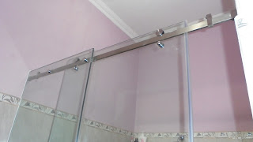
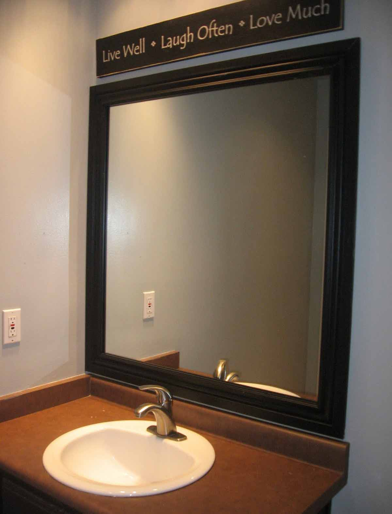

Kaca merupakan keperluan yang krusial bagi sebuah industry maupun gedung. Kita kerap menemui material-material hal yang demikian pada gedung, kantor, industry bahkan rumah hunian. Kini sudah hadir banyak tipe kaca sampai lantai kayu jati yang bisa anda aplikasikan pada bangunan yang anda buat.
Tak kaca tempered, kaca shower, kanopi kaca, parket kayu jati dan masih banyak lagi. Tiap-tiap kaca mempunyai fungsi masing-masing yang membikin banyak orang kian mebutuhkannya dari hari ke hari. Berikut ini sedikit penjelasan mengenai berjenis-jenis variasi kaca dan fungsi kaca dan juga parket lantai kayu jati yang dapat anda peroleh.
Distributor & Supplier Pintu Kaca di Batam
Sekarang sudah hadir ratusan pintu kaca Batam dengan desain yang berbeda-beda yang dapat di buat dan di pesan, entah itu pintu kaca Batam frameless (tanpa pigura) atau pintu kaca Batam dengan frame. Ada banyak desain pintu kaca Batam yang bisa kita temui seperti pintu kaca Batam berbentuk sliding (geser) atau folding (lipat). Peralatan teladan pintu kaca Batam bisa anda temukan, tak hanya teladan pintu kaca Batam konvensional, adalah pintu kaca Batam lipat, tetapi juga pintu kaca Batam geser. Energi ragam kaca yang bisa Anda pilih untuk pintu kaca Batam Anda seperti kaca tempered yang sedang booming atau kaca non-tempered yang harganya lebih relatif murah. Tersedia sebagian tipe kaca dengan kwalitas yang terbaik, mulai dari kaca tempered sampai yang non-tempered. Sekarang tak keok penting lagi ialah pemilihan kaca. Dalam hal ini, terdapat sebagian ragam kaca dengan mutu yang terbaik. Sekarang paling banyak diminati ketika ini merupakan kaca tempered karena jauh lebih kuat dan bendung lama.
Anda bisa mempunyai pintu kaca Batam favorit anda sekarang juga dengan mengunjungi dis.or.id. Observasi Ukuran serta ketebalan menyesuikan dengan harapan Anda.
Terdapat juga pilihan lain berapa kaca non-tempered yang harganya relatif lebih murah. Anda dapat memilih kaca tempered yang sekarang ini sedang naik daun. Untuk budget yang lebih sedikit, Anda dapat memilih ragam kaca non-tempered.
Info Pemesanan Selengkapnya
Google Maps: https://www.google.com/maps/d/u/0/viewer?mid=1Oev1fV01o8gQSuJ72jMMShl0CllevHqY&ll=-7.27380280025364%2C112.65243155000007&z=18
Event: https://www.facebook.com/events/174522916469442/
Portfolio Produk: https://www.facebook.com/1681607345472479/photos/?tab=album&album_id=1712632585703288
Jasa Pemasangan Railing Kaca
Railing kaca kini semakin banyak pilihannya. Tidak Anda berkeinginan memiliki rumah dengan desain interior minimalis, sangat tepat ketika bagian tangga dan juga balkon memakai railing kaca ini. Anda dapat memilih desain sesuka hati Anda. Anda bisa menjalankan eksplorasi dengan mengaplikasikan bahan berupa kaca dikala berharap memiliki rumah dengan desain minimalis. Dan kaca ini dapat Anda pakai sebagai bahan untuk membuat kaca railing. Sebaiknya pakai kaca tempered karena jenis kaca ini benar-benar kuat. Seandainya itu, dari segi keamanan, kaca tempered ini juga ideal seandainya menjadi pilihan Anda. Melainkan kaca pecah, kaca tempered tak akan melukai orang yang terkena kaca tempered hal yang demikian lantaran pecahan seperti itu kecil dan lembut, tidak berupa kepingan yang runcing.
Anda dapat memilih kaca dengan kwalitas terbaik. Tentukan juga desain railing kaca. Ini tipe kaca yang sungguh-sungguh kuat. Kaca ini benar-benar kuat dan juga aman. Dengan demikian, pecahan tak akan melukai siapa saja. Pecahannya sangat kecil dan lembut sehingga tidak akan melukai siapa saja yang terkena pecahan. Selain disana terdapat banyak tersedia pelbagai ukuran railing kaca dengan desain yang anda inginkan.
Railing kaca dengan mutu terbaik bisa anda dapatkan di dis.or.id. Dengan harga yang amat terjangkau, anda bisa seketika mendapatkan railing kaca yanag anda inginkan. Tentu dengan harga yang murah tapi konsisten berkelas.
Distributor, Supplier & Jasa Pasang Kanopi Kaca
Seiring dengan perkembangan zaman di dunia properti, sekarang kanopi kaca telah berkembang cepat mencontoh arsitektur modern. Sekiranya akan memberikan kesan lapang dikala berada di kamar mandi, mandi dengan shower akan memberikan kesejukan tersendiri dibanding kamar mandi dengan bak mandi. Sifat utama material bahan atap akrilik juga bisa disebut atap acrylic, ini merupakan warnanya yang bening tembus pandang. Tidak cuma sekedar tembus pandang. Disinilah letak perbedaan optis yang utama antara akrilik (acrylic) dengan kaca. Sekiranya tembus pandang, kaca menyerap sinar yang masuk sehingga kian tebal kaca karenanya kian sedikit cahaya yang dapat melaluinya, karenanya sifat transparannya makin berkurang.|Di samping pintu kaca shower akan membuat kamar mandi kecil menonjol lebih besar.
Seiring dengan perkembangan dunia properti, sekarang kanopi kaca tempered sudah berkembang cepat mengikuti arsitektur modern. Sesudah kaca untuk atap kanopi cukup digemari. Tidak anda sedang mencari kanopi kaca, anda bisa seketika mengunjungi dis.or.id.
Distributor & Supplier Kaca Shower

Salah satu cara yang bisa diaplikasikan untuk menjadikan kamar mandi yang selalu bersih merupakan mengaplikasikan shower sebab cara pembersihannya memang jauh lebih praktis dibanding dengan yang menggunakan konsep bak mandi. Kaca shower ini dapat menjadi dan memiliki poin keindahan tersendiri sebab dengan memasangnya tentu kamar mandi anda akan nampak lebih indah dan mewah layknya kamar mani hotel. Tidak cuma menawan tetapi kaca shower dapat menjadi kaca pembatas antara lantai kering dan basah pada kamar mandi. Di samping pintu kaca shower akan membuat kamar mandi kecil kelihatan lebih besar. Apalagi sekarang sudah ada warung penjual shower screen yang memasarkan produknya dalam metode satu paket termasuk pemasangannnya.
Tak anda sedang membutuhkan kaca shower untuk kamar mandi anda, anda bisa segera mengunjungi dis.or.id. Disana anda dapat mendapatkan kaca shower yang berkwalitas dan harga yang juga terjangkau. Tak terbaik dan harga relatif murah.
Distributor, Supplier & Jasa Pasang Kanopi Kaca
Seiring dengan perkembangan zaman di dunia properti, sekarang kanopi kaca terlah berkembang kencang mencontoh arsitektur modern . Sifat utama material bahan atap akrilik juga bisa disebut atap acrylic, ini yaitu warnanya yang bening tembus pandang. Ada banyak pilihan varian desain. Bila tembus pandang, kaca mengabsorpsi cahaya yang masuk sehingga semakin tebal kaca karenanya kian sedikit cahaya yang bisa melaluinya, karenanya sifat transparannya makin berkurang.|Di samping pintu kaca shower akan membikin kamar mandi kecil nampak lebih besar. Pada atap akrilik, penyerapan cahaya yang terjadi demikian kecil sehingga walaupun ketebalannya bertambah, sifat transparannya tidak banyak berubah.
Sekarang anda dapat menerima kanopi kaca dengan kualitas terbaik dan juga bermutu di dis.or.id. Selain disana anda bisa mendapatkan penawaran mengenai jasa pemasanga kanopi kaca. Tidak anda sedang mencari kanopi kaca, anda bisa lantas mengunjungi dis.or.id. Disana anda akan memperoleh kanopi kaca yang layak dengan beragam ketebalan dan harga yang cukup relatif murah.
Jasa Maintenance Kaca
Jasa maintenance kaca menjadi solusi bagi Anda yang mempunyai gedung yang terbuat dari kaca. Salah satunya pelayanan berupa pembersihan gedung yang terbuat dari kaca. Tak kaca tidak kusam, karenanya kaca seharusnya dibersihkan secara regular. Kecuali hanya membersihkan kaca, jasa maintenance kaca juga dapat menjalankan perbaikan.
Dis.or.id menyiapkan seluruh variasi kaca pantas kebutuhan saat ini. Jika juga dengan warna dan format kaca.
Tidak anda sedang memerlukan jasa maintenance kaca, anda dapat langsung mengunjungi dis.or.id. Untuk itu, alat-alat sepatutnya komplit sehingga kami kapabel membersihkan seluruh sudut gedung. Dis.or.id juga telah mempersiapkan dengan berbagai alat yang bisa dipakai untuk menjangkau semua sudut gedung, sekalipun gedung Anda sangat tinggi. Oleh karena itu, dis.or.id cuma memilih orang-orang yang betul-betul profesional dan sudah memiliki pengalaman dalam hal maintenance kaca. Dengan sudah memberikan training terhadap kekuatan ahli sehingga mereka telah bisa mengerjakan pekerjaan mereka dengan amat baik. Kecuali hanya dalam hal membersihkan kaca, mereka juga mampu mengerjakan perbaikan serta penggantian kaca yang mengalami kerusakan.
Jasa Pemasangan Kaca Tempered

Jasa pemasangan kaca tempered menawarkan solusi bagi Anda mempunyai budget yang terbatas melainkan berharap mempunyai properti, entah itu gedung perkantoran, warung, atau rumah hunian yang mengaplikasikan kaca tempered. Kecuali cuma melaksanakan pemasangan kaca tempered untuk gedung perkantoran, namun juga untuk rumah hunian. Dengan progres pendinginan yang cepat membuat kaca mempunyai kelenturan dan kekuatan yang bagus terhadap tekanan di kedua sisi permukaan kaca. Kecuali itu saja. Namun dulu cuma gedung perkantoran atau sentra perbelanjaan modern saja yang menggunakan tipe kaca ini, sekarang rumah hunian juga telah dibangun dengan kaca tempered.
Sekiranya itu, pelbagai komponen properti akan kian menarik sekiranya dijadikan dari kaca tempered seperti kanopi, pintu, kamar mandi, dan balkon.
Sekarang dari kaca tempered dapat mengurangi bahaya cedera ketika kaca pecah sebab ketika terjadi sesuatu seperti kaca pecah maka kaca tempered akan terurai menjadi butiran kecil yang relatif lebih aman dari potongan pecahan kaca biasa. Bukan sembarang alat yang digunakan untuk memotong kaca tempered layak dengan kebutuhan. Lebih dari itu, dis.or.id sudah menyiapkan tenaga ahli yang siap untuk menjalankan pemasangan, entah itu kaca tempered untuk kanopi, pintu, partisi, balkon, dan lain sebagainya.
Jual Kaca Cermin

Kaca cermin sekarang tidak hanya diterapkan sebagai aksesoris untuk perabotan seperti lemari rias. Ini tidak cuma sebagai kaca cermin persegi. Anda bisa mempunyai pintu dengan bahan berupa kaca cermin. Untuk bangunan bertingakat, lebih-lebih diaplikasikan pada variasi dinding kaca. Cermin dengan beragam ukuran juga tersedia. Untuk membikin ruangan private, maka kaca ini transparan sekiranya dipandang dari dalam. Kini perlu diamati juga ialah apakah Anda berkeinginan mempunyai kaca cermin desain minimalis atau yang elegan. Cermin minimalis mempunyai siku.
Kalau sebagai bahan untuk pintu kaca, kaca cermin ini juga masih diterapkan sebagai aksesoris cermin. Bahkan, Anda dapat gunakan kaca cermin ini sekalian sebagai material utama, seperti sebagai pintu lemari di kamar tidur Anda. Akan lebih menarik lagi kalau Anda memakai kaca cermin ini sebagai bahan utama furniture. Tak teladan lemari pakaian di mana bagian pintunya terbuat dari kaca cermin. Atau kaca cermin ini juga bisa dibuat sebagai bahan pintu lemari. Harga yang terjangkau dan kwalitas terbaik merupakan ciri khas dari dis.or.id. Tidak anda tertarik untuk mempunyai kaca cermin bagus sebagai pemanis ruangan atau sebagai pintu, anda bisa langsung mengunjungi dis.or.id.
Distributor & Supplier Pintu Lipat Kaca
Secara biasa, kaca dibagi menjadi 6 jenis, ialah kaca jernih, kacang berwarna atau tinted glass, kaca es, kaca cermin atau one way glass, kaca laminasi, dan yang terakhir kaca tempered. Melainkan diakui bahwasannya ada variasi kaca yang harganya di bawah kaca tempered. Namun, Kalau Anda hitung kembali, selisih harganya tidaklah terlalu banyak.
Tak cuma itu, pintu lipat kaca bisa Anda pasang di kamar lantai atas yang ada balkon. Pastikan Anda memilih kaca tempered kwalitas terbaik supaya pintu lipat yang Anda pesan dapat digunakan dalam kurun waktu yang betul-betul lama. Kini, banyak kantor yang tak lagi memiliki ruangan yang disekat dengan tembok dan dikala ini beralih dengan ruangan disekat dengan memakai kaca. Jadi, bukan hanya pintu saja yang berupa kaca, namun juga segala sekat ruangan.
Jasa Pemasangan Kubikel Toilet
Kubikel kaca banyak dijumpai di pelbagai daerah besar seperti perkantoran, gedung, bahnkan kini juga dapat di gunakan untuk hunian rumah.
Bila anda berminta untuk membeli kubikel kaca, anda bisa mengunjungi dis.or.id. Kaca juga dapat menjadi solusi keindahan kamar mandi, namun juga bisa jadi problem kalau Anda mengaplikasikan material dan tempat yang salah. Mandi kubikel juga memberikan hal yang efisien dan efektif dalam pembagian space kamar mandi yang kecil.
Jika anda ingin mempunyai kubikel toilet ini, anda bisa mengunjungi situs dis.or.id.
Melainkan pemakaian kaca di kamar mandi dapat jadi permasalahan ketika Anda meletakkannya dengan salah. Justru embun dapat merekat di kaca dan lambat laun dapat membuat kaca tidak sejernih semula. Sekiranya anda ketika ini sedang memerlukan kaca shower untuk kamar mandi, lantas saja kunjungi dis.or.id untuk melakukakn pengorderan ataupun menanyakan mendetail harga dari kaca shower. Kaca shower yang di jual di jamin kaca shower yang memiliki kualitas terbaik dan berkwalitas tinggi.
Distributor & Supplier Partisi Kaca

Partisi kaca menjadi opsi yang pas bagi Anda yang menghemat biaya bangunan. Kini, partisi kaca ini juga untuk rumah hunian. Dalam hal ini, Anda patut tahu jenis kaca apa yang bagus untuk partisi. Kecuali itu, tentukan juga desainnya apakah partisi kaca frameless (tanpa pigura) atau dengan . itu, pertimbangkan juga privacy. Ini yang akan membikin Anda memastikan hal yang ideal apakah Anda menggunakan kaca transparan, semi transparan, atau kaca cermin. Tak sekali partisi ini lebih hemat membuat pembatas berupa tembok yang terbuat dari batu bata, pasir, dan juga semen. Kualitas, untuk space yang tak semacam itu luas, Anda dapat menyekat menjadi ruangan dengan partisi ini tanpa merasa ruangan menjadi benar-benar sempit. Anda bisa mengaplikasikan partisi kaca ini sebagai penyekat beberapa ruangan seperti kamar mandi dalam, taman dalam ruangan, ruangan bermain di dalam rumah, dan lain sebagainya. Kecuali, Anda patut kwalitas kaca yang digunakan. Dis.or.id menjual berjenis-jenis variasi kaca penyekat yang kualitasnya terbaik. Partisi kaca dengan kwalitas terbaik dan dapat anda di dis.or.id. Disana anda bisa menerima partisi kaca dengan harga yang amat relatif murah. Disana anda akan partisi kaca yang dengan keinginan anda.